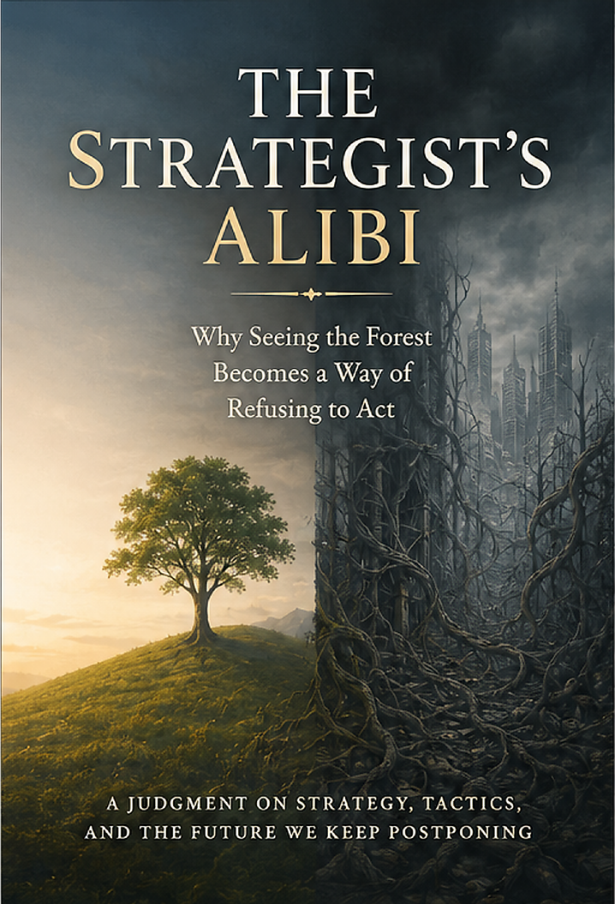

Power, Institutions & Society · Axiologic Research Editions
The Strategist’s Alibi
Why Seeing the Forest Becomes a Way of Refusing to Act
Step into the room with all the futures and test whether seeing the forest can illuminate responsibility or become a polished excuse for postponement.
The room with all the futures
Every large organization can produce a room full of scenarios, trends, dependencies, and risks. The effort is valuable, but it gains a shadow when the future never has standing while present relationships, harms, and choices remain someone else’s problem. Duration is not depth, and strategic language is not action.
The book asks what happens when a capacity to see complexity separates itself from the capacity to make a difficult, revisable move.
Forty threads, no rope
Complex organizations can confuse connected conversation with integration. Reports circulate, meetings multiply, and every team sees a fragment of the same problem. Without an owner for the join, the whole remains an alibi: everyone can point to awareness while no one is responsible for coordination.
A forest view is an achievement only when it changes the hand reaching for the next tree.
Strategy that returns to contact
The book argues for reversible commitments, visible trade-offs, ownership of links between domains, and recurring contact with the people and conditions an abstract plan affects. The goal is not anti-strategy; it is strategy that earns its distance by remaining answerable to reality.